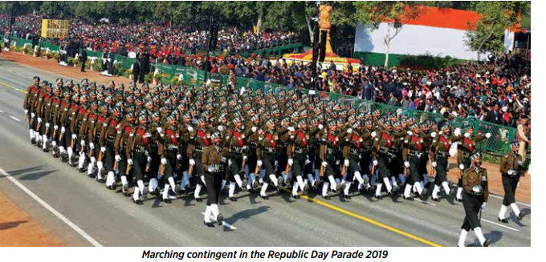
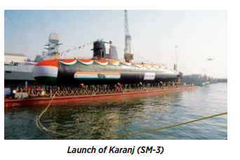
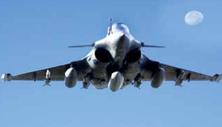

Indian Defence System
Indian Defence Report(2018)
Indian Army
The changing global geo-political dynamics presents the Nation with multiple security challenges. While constantly reviewing its operational preparedness/ postures to meet the perceived security challenges, the Indian Army (IA) is committed to the defence of the country from external and internal threats across the entire spectrum of warfare. Also, in times of disaster/ natural calamities, the Indian Army is in the forefront, providing aid and succour to the affected people.
JAMMU AND KASHMIR

The situation in J&K has remained volatile. Our deployment along the Line of Control (LC) and hinterland along with accretional forces has facilitated the Security Forces to maintain momentum of operations against terrorists. In the hinterland, the districts of Pulwama, Shopian, Anantnag and Kulgam remained the hub of terror related activities. Along the LC, areas South of Pir Panjal Ranges remained violent due to frequent Ceasefire Violations while the infiltration attempts from North of Pir Panjal Ranges have continued as hither to fore.
Ceasefire Violations (CFV):
The ceasefirealong the Actual Ground Position Line(AGPL), LC andInternational Border (IB) Sectors in J&K was generallyheld. In the year 2016 post Uri terrorist attack (September 18, 2016), the tempo of CFVs increased considerably and has remained constant this year too. There were 228 CFVs along the LC in 2016, 860 CFVs in 2017 and 1629 CFVs in 2018. Appropriate and effective retaliation, wherever required, was carried out to the CFVs initiated by Pakistan. The incidents of CFVs are taken up through the established mechanisms of hotlines, flag meetings and Directorate General of Military Operation talks between both countries.
Infiltration:
Active training and aiding of terrorists continue from across the border to infiltrate through the LC. The efficacy of own Counter Infiltration grid has resulted in heavy attrition on infiltrating terrorists and lowering of successful infiltration across the LC. In 2018, Army eliminated 15 infiltration bids resulting in 35 terrorists killed. In 2017, the Army had eliminated 33 infiltration bids resulting in 59 terrorist killed. Situation in Hinterland Security Forces achieved remarkable success in the year 2018. Operations were conducted in excellent synergy with J&K Police and CRPF. Terrorist leadership and Over-Ground Workers (OGWs) were targeted in efficacy. 254 terrorists have been eliminated by the Security Forces in 2018 in J&K.

Suspension of Offensive Operation (SoOO) declared by the Government with effect from May 17 to June 16, 2018 provided an opportunity to the populace for peaceful celebration of the holy month of Ramzan. The terrorists, however, disregarded the initiative and used the opportunity to coerce the population, neutralize sympathizers of security forces, strengthen their network and increase terror incidents.
Indian Navy
India is a maritime nation and the country sits astride a large number of busy International Shipping Lanes that criss-cross the Indian Ocean. About 90% of our trade by volume and 70% by value is transported over the seas. For a rapidly growing economy seeking new markets worldwide, the volume of maritime trade will only grow in times to come.
The Indian Navy (IN) has been playing a maritime leadership role in the Indian Ocean Region due to its multi-dimensional capabilities and active presence in the region. The environment in India’s maritime neighbourhood is dynamic with increased instabilities, deepening geopolitical and ethnic faultiness, growing military capabilities and wide range of security challenges. These pose a combination of conventional and sub-conventional threats emanating to India, at
and from the seas. These threats and challenges require the Indian Navy to remain effective across the entire spectrum of combat operations and constantly reshape itself to meet future challenges.
Weapons
Exercise Sea Vigil-19:The maiden large scale, Pan India Coastal Defence Exercise Sea Vigil-19 was conducted along the entire coastline and Exclusive Economic Zone of India on January 22-23, 2019 activating all agencies involved in the coastal security construct, and to identify gaps and mitigating measures. The mega exercise undertaken along the entire 7516.6 kms coastline and Exclusive Economic Zone of India saw participation by more than 200 ships, aircraft and patrol boats manned and operated by various security agencies.
AMPHEX-19: IN ships Shakti, Kuthar, Gharial and Airavat participated in Tri-Service Exercise ‘AMPHEX-19’ at Port Blair from January 21-24, 2019. Various naval operations, including airdrops as well as amphibious landings were exercised at Radhanagar beach on Swaraj Dweep, as part of the exercise.
TROPEX-19: IN’s largest biennial war game, Theatre Level Operational Readiness Exercise (TROPEX-19) was conducted from January-March 2019 across the entire IOR. The exercise was coordinated by the Naval Headquarters with participation of three Commands of the Navy and the Tri-Service Command at Port Blair. In addition, units of Indian Army, Indian Air Force and Indian Coast Guard participated in the exercise.

Navy to Navy Interaction
IWG Meeting on HADR: The 3rd meetings of IONS Working Group (IWG) on HADR was conducted under the aegis of Headquarters Eastern Naval Command, Vishakhapatnam from September 27- 28, 2018. Participants from the IWG member nations including Australia, Bangladesh, France, India, Indonesia, Iran, Kenya, Oman and Thailand participated in the two
day event. The ‘Guidelines on HADR for IONS nations’, prepared by IN was validated by conducting of a Table Top Exercise as part of the meeting. Indian Ocean Naval Symposium (IONS).
Training of Vietnam Peoples Navy (VPN)Personnel:
Training of 20 VPN personnel in Submarine Mechanical and Electrical Repairs was successfully undertaken at Naval Dockyard, Visakhapatnam for duration of six months.
Indian Air Force
The IAF is pursuing a focused modernisation plan to transform into a strategic aerospace power with full spectrum capability. Continuous upgradation of the existing equipment and induction of new weapon platforms and systems have ensured that IAF continues to progress on the desired trajectory of modernisation. Future inductions of Rafale aircraft, Attack Helicopters, Heavy Lift Helicopters, Combat Support Elements, Surface-to-Air Guided Weapon (SAGW) and Air Defence Radars will bolster operational capability and capacity. The IAF is also strengthening its ability to undertake Network Centric Operations (NCO) by integrating all
sensors, weapon systems and Command and Control structure.
FIGHTER PLATFORMS
BrahMos on Su-30MKI: Contract with BAPL to integrate BrahMos missile on Su-30 MKI aircraft has been signed. IAF coordinated with all stakeholders to integrate the weapon. The first successful release from the Su-30 MKI was undertaken in August 2016. Live firing of the combat missile against a sea based target was successfully carried out on November 22, 2017. Successful integration of the BrahMos missile on the Su-30 MKI has enhanced the strategic reach and combat potential of the aircraft.

Rafale: Rafale aircraft will provide long range capability to engage targets in depth and will provide a strong weapons and systems capability edge over our adversaries. The Rafale aircraft will provide IAF the strategic deterrence and requisite capability cum technological edge. The training of first batch of Officers and technicians is underway with the French Air Force.
e - Maintenance Management System
Indian Air Force has embarked on digitizing/ automating maintenance documentation and management through ‘Project e-Maintenance Management System’. The project is one of the largest and most complex implementation of “Enterprise Asset Management System” at 170 IAF bases. It would help IAF to transform from paper based maintenance documentation system to an online Maintenance Management system, in line with “Digital India”theme. 5.36 e-MMS is a web based application designed to cover all maintenance activities and decision making process. It rides over AFNET infrastructure and has centralized architecture. It will enhance effectiveness of management decisions by capturing data at the source and providing tools for analysis of this data realistically.
COPYRIGHT : DEFENCE SYSTEM OF INDIA